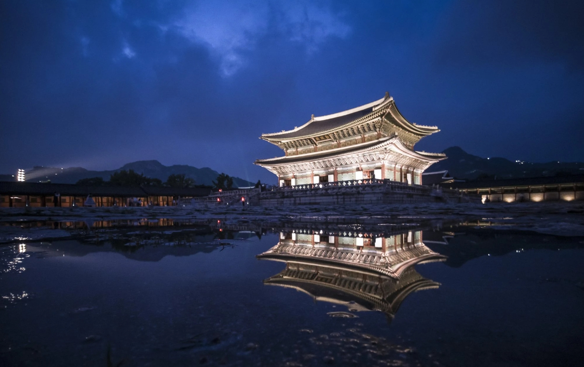

경복궁의 역사

조선의 으뜸 궁궐, 경복궁
경복궁 은 조선 왕조 제일의 법궁입니다.
북으로 북악산을 기대어 자리 잡았고 정문인 광화문 앞으로는 넓은 육조거리(지금의 세종로)가 펼쳐져, 왕도인 한양(서울) 도시 계획의 중심이기도 합니다.
1395년 태조 이성계가 창건하였고, 1592년 임진 왜란으로 불타 없어졌다가, 고종 때인 1867년 중건 되었습니다. 흥선대원군이 주도한 중건된 경복궁은 500여 동의 건물들이 미로같이 빼곡히 들어선 웅장한 모습 이었습니다.
궁궐 안에는 왕과 관리들의 정무 시설, 왕족들의 생활 공간, 휴식을 위한 후원 공간이 조성되었습니다. 또한 왕비의 중궁, 세자의 동궁, 고종이 만든 건청궁 등 궁궐안에 다시 여러 작은 궁들이 복잡하게 모인 곳이기도 합니다. 그러나 일제 강점기에 거의 대부분의 건물들을 철거하여 근정전 등 극히 일부 중심 건물만 남았고, 조선 총독부 청사를 지어 궁궐 자체를 가려버렸습니다. 다행히 1990년부터 본격적인 복원 사업이 추진되어 총독부 건물을 철거하고 흥례문 일원을 복원하였으며, 왕과 왕비의 침전, 동궁, 건청궁, 태원전 일원의 모습을 되찾고 있습니다.
광화문 - 흥례문 - 근정문 - 근정전 - 사정전 - 강녕전 - 교태전 을 잇는 중심 부분은 궁궐의 핵심 공간이며, 기하학적 질서에 따라 대칭적으로 건축 되었습니다. 그러나 중심부를 제외한 건축물들은 비대칭적으로 배치되어 변화와 통일의 아름다움을 함께 갖추었습니다. 수도 서울의 중심이고 조선의 으뜸 궁궐인 경복궁에서 격조 높고 품위 있는 왕실 문화의 진수를 맛보시기 바랍니다.
경복궁의 역사
Since. 1300 ~ 현재
1300년대
- 경복궁 창건
태조 1년(1392) 조선 개국
태조 3년(1394) 신도궁궐조성도감 설치, 개경에서 한양 천도
태조 4년(1395) 종묘·사직 그리고 경복궁 창건
태조 5년(1396) 경복궁 궁성 축조
1400년대
- 법궁 체제 확립
태종 12년(1412) 경회루를 고쳐 지음
세종 9년(1427) 동궁 자선당 건립
세종 11년(1429) 사정전과 경회루 다시 지음
세종 13년(1431) 광화문을 고쳐 지음
세종
14년
(1432)
문소전을 새로 지음
세종
15년
(1433)
신무문 새로 지음. 강녕전 고쳐 지음
세종
16년
(1434)
광화문에 새 종 설치. 보루각 새로 지음(자격루 설치).융문루·융무루 수리
세종
20년
(1438)
흠경각 새로 지음(옥루기륜 설치)
세종
25년
(1443)
계조당·교태전 새로 지음
세조
2년
(1456)
취로정 새로 지음
성종
5년
(1474)
근정전에 청기와 올림
1500년대
- 화재 및 임진왜란으로 경복궁 소실
중종
38년
(1543)
동궁 화재로 인해 소실
명종
8년
(1553)
화재로 인해 강녕전, 사정전, 흠경각 등 소실
선조
25년
(1592)
임진왜란으로 경복궁 소실
1800년대
- 대원군의 중건과 화재
고종
2년
(1865)
경복궁 중건 시작
고종
4년
(1867)
경복궁 중건 완료. 근정전에서 조하 의식 거행
고종
5년
(1868)
창덕궁에서 경복궁으로 이어
고종
10년
(1873)
경복궁에 건청궁 새로 지음
고종
13년
(1876)
화재로 인해 830여칸 건물 소실
고종
25년
(1888)
강녕전·교태전·자경전 등 다시 지음
1900년대
- 민족 수난기와 경복궁 복원
1915년 시정 5년 기념 조선물산공진회 개최.조선총독부 박물관 건물 준공
1918년 강녕전, 교태전 등 내전 전각 훼철
1927년 조선총독부 청사 준공.광화문 이건
1954년 경복궁 일반공개
1968년 광화문 복원
1975년 영추문 복원 및 동정문 건립
1994년 강녕전·교태전 일곽 복원
1995년 흠경각 복원, 구 조선총독부 박물관 건물 철거
1997년 구 조선총독부 청사 철거
1999년 동궁 복원(자선당·비현각)
2000년대
- 경복궁 복원
2001년 흥례문·유화문·영제교 복원
2003년 근정전 귀고주 교체 및 지붕 전면 보수
2005년 경회루 동편담장 복원, 태원전 일곽 복원
2006년 건청궁 일곽 복원
2008년 함화당,집경당 보수 및 주변행각 복원
2010년 광화문 일곽 복원
2015년 소주방 일곽 복원
2018년 흥복전 일곽 복원
2021년 향원정 보수 및 취향교 복원